library("corrplot") # plots correlation matrices
library("ggsignif") # significance levels in boxplots
library("gt") # great tables
library("patchwork") # arrange plots side-by-side
library("tidyverse") # data wrangling and visualization
correlatedValues = function(x, r = 0.9){
r2 = r**2
ve = 1-r2
SD = sqrt(ve)
e = rnorm(length(x), mean=0, sd=SD)
y = r*x + e
return(y)
}SML 201
Start
Goal: Explore covariance
Objective: Compute interquartile ranges and correlations

- image source: XKCD
Data
- Coffee Ratings
- source: Coffee Quality Database
- host: TidyTuesday — July 7, 2020
# coffee_df <- readr::read_csv('https://raw.githubusercontent.com/rfordatascience/tidytuesday/master/data/2020/2020-07-07/coffee_ratings.csv')
coffee_df <- readr::read_csv("coffee_ratings.csv")Glance
head(coffee_df)# A tibble: 6 × 43
total_cup_points species owner country_of_origin farm_name lot_number mill
<dbl> <chr> <chr> <chr> <chr> <chr> <chr>
1 90.6 Arabica metad p… Ethiopia "metad p… <NA> meta…
2 89.9 Arabica metad p… Ethiopia "metad p… <NA> meta…
3 89.8 Arabica grounds… Guatemala "san mar… <NA> <NA>
4 89 Arabica yidneka… Ethiopia "yidneka… <NA> wole…
5 88.8 Arabica metad p… Ethiopia "metad p… <NA> meta…
6 88.8 Arabica ji-ae a… Brazil <NA> <NA> <NA>
# ℹ 36 more variables: ico_number <chr>, company <chr>, altitude <chr>,
# region <chr>, producer <chr>, number_of_bags <dbl>, bag_weight <chr>,
# in_country_partner <chr>, harvest_year <chr>, grading_date <chr>,
# owner_1 <chr>, variety <chr>, processing_method <chr>, aroma <dbl>,
# flavor <dbl>, aftertaste <dbl>, acidity <dbl>, body <dbl>, balance <dbl>,
# uniformity <dbl>, clean_cup <dbl>, sweetness <dbl>, cupper_points <dbl>,
# moisture <dbl>, category_one_defects <dbl>, quakers <dbl>, color <chr>, …str(coffee_df, give.attr = FALSE)spc_tbl_ [1,339 × 43] (S3: spec_tbl_df/tbl_df/tbl/data.frame)
$ total_cup_points : num [1:1339] 90.6 89.9 89.8 89 88.8 ...
$ species : chr [1:1339] "Arabica" "Arabica" "Arabica" "Arabica" ...
$ owner : chr [1:1339] "metad plc" "metad plc" "grounds for health admin" "yidnekachew dabessa" ...
$ country_of_origin : chr [1:1339] "Ethiopia" "Ethiopia" "Guatemala" "Ethiopia" ...
$ farm_name : chr [1:1339] "metad plc" "metad plc" "san marcos barrancas \"san cristobal cuch" "yidnekachew dabessa coffee plantation" ...
$ lot_number : chr [1:1339] NA NA NA NA ...
$ mill : chr [1:1339] "metad plc" "metad plc" NA "wolensu" ...
$ ico_number : chr [1:1339] "2014/2015" "2014/2015" NA NA ...
$ company : chr [1:1339] "metad agricultural developmet plc" "metad agricultural developmet plc" NA "yidnekachew debessa coffee plantation" ...
$ altitude : chr [1:1339] "1950-2200" "1950-2200" "1600 - 1800 m" "1800-2200" ...
$ region : chr [1:1339] "guji-hambela" "guji-hambela" NA "oromia" ...
$ producer : chr [1:1339] "METAD PLC" "METAD PLC" NA "Yidnekachew Dabessa Coffee Plantation" ...
$ number_of_bags : num [1:1339] 300 300 5 320 300 100 100 300 300 50 ...
$ bag_weight : chr [1:1339] "60 kg" "60 kg" "1" "60 kg" ...
$ in_country_partner : chr [1:1339] "METAD Agricultural Development plc" "METAD Agricultural Development plc" "Specialty Coffee Association" "METAD Agricultural Development plc" ...
$ harvest_year : chr [1:1339] "2014" "2014" NA "2014" ...
$ grading_date : chr [1:1339] "April 4th, 2015" "April 4th, 2015" "May 31st, 2010" "March 26th, 2015" ...
$ owner_1 : chr [1:1339] "metad plc" "metad plc" "Grounds for Health Admin" "Yidnekachew Dabessa" ...
$ variety : chr [1:1339] NA "Other" "Bourbon" NA ...
$ processing_method : chr [1:1339] "Washed / Wet" "Washed / Wet" NA "Natural / Dry" ...
$ aroma : num [1:1339] 8.67 8.75 8.42 8.17 8.25 8.58 8.42 8.25 8.67 8.08 ...
$ flavor : num [1:1339] 8.83 8.67 8.5 8.58 8.5 8.42 8.5 8.33 8.67 8.58 ...
$ aftertaste : num [1:1339] 8.67 8.5 8.42 8.42 8.25 8.42 8.33 8.5 8.58 8.5 ...
$ acidity : num [1:1339] 8.75 8.58 8.42 8.42 8.5 8.5 8.5 8.42 8.42 8.5 ...
$ body : num [1:1339] 8.5 8.42 8.33 8.5 8.42 8.25 8.25 8.33 8.33 7.67 ...
$ balance : num [1:1339] 8.42 8.42 8.42 8.25 8.33 8.33 8.25 8.5 8.42 8.42 ...
$ uniformity : num [1:1339] 10 10 10 10 10 10 10 10 9.33 10 ...
$ clean_cup : num [1:1339] 10 10 10 10 10 10 10 10 10 10 ...
$ sweetness : num [1:1339] 10 10 10 10 10 10 10 9.33 9.33 10 ...
$ cupper_points : num [1:1339] 8.75 8.58 9.25 8.67 8.58 8.33 8.5 9 8.67 8.5 ...
$ moisture : num [1:1339] 0.12 0.12 0 0.11 0.12 0.11 0.11 0.03 0.03 0.1 ...
$ category_one_defects : num [1:1339] 0 0 0 0 0 0 0 0 0 0 ...
$ quakers : num [1:1339] 0 0 0 0 0 0 0 0 0 0 ...
$ color : chr [1:1339] "Green" "Green" NA "Green" ...
$ category_two_defects : num [1:1339] 0 1 0 2 2 1 0 0 0 4 ...
$ expiration : chr [1:1339] "April 3rd, 2016" "April 3rd, 2016" "May 31st, 2011" "March 25th, 2016" ...
$ certification_body : chr [1:1339] "METAD Agricultural Development plc" "METAD Agricultural Development plc" "Specialty Coffee Association" "METAD Agricultural Development plc" ...
$ certification_address: chr [1:1339] "309fcf77415a3661ae83e027f7e5f05dad786e44" "309fcf77415a3661ae83e027f7e5f05dad786e44" "36d0d00a3724338ba7937c52a378d085f2172daa" "309fcf77415a3661ae83e027f7e5f05dad786e44" ...
$ certification_contact: chr [1:1339] "19fef5a731de2db57d16da10287413f5f99bc2dd" "19fef5a731de2db57d16da10287413f5f99bc2dd" "0878a7d4b9d35ddbf0fe2ce69a2062cceb45a660" "19fef5a731de2db57d16da10287413f5f99bc2dd" ...
$ unit_of_measurement : chr [1:1339] "m" "m" "m" "m" ...
$ altitude_low_meters : num [1:1339] 1950 1950 1600 1800 1950 ...
$ altitude_high_meters : num [1:1339] 2200 2200 1800 2200 2200 NA NA 1700 1700 1850 ...
$ altitude_mean_meters : num [1:1339] 2075 2075 1700 2000 2075 ...colnames(coffee_df) [1] "total_cup_points" "species" "owner"
[4] "country_of_origin" "farm_name" "lot_number"
[7] "mill" "ico_number" "company"
[10] "altitude" "region" "producer"
[13] "number_of_bags" "bag_weight" "in_country_partner"
[16] "harvest_year" "grading_date" "owner_1"
[19] "variety" "processing_method" "aroma"
[22] "flavor" "aftertaste" "acidity"
[25] "body" "balance" "uniformity"
[28] "clean_cup" "sweetness" "cupper_points"
[31] "moisture" "category_one_defects" "quakers"
[34] "color" "category_two_defects" "expiration"
[37] "certification_body" "certification_address" "certification_contact"
[40] "unit_of_measurement" "altitude_low_meters" "altitude_high_meters"
[43] "altitude_mean_meters" Scatterplots
NoteScatterplots
A scatterplot helps us visualize two numerical variables.
coffee_df |>
filter(total_cup_points > 0) |>
ggplot(aes(x = acidity, y = body)) +
geom_point() +
labs(title = "Coffee Ratings",
subtitle = "Do the data vary together?",
caption = "Source: Coffee Quality Database") +
theme_minimal()
Covariance
For data \((X,Y)\) listed as \(n\) data points \((x_{i}, y_{i})\), the covariance is defined as
\[\begin{array}{rcl} \text{Cov}(X,Y) & = & \frac{1}{2n^{2}}\sum_{i=1}^{n}\sum_{j=1}^{n}(x_{i} - x_{j})(y_{i} - y_{j}) \\ ~ & = & \text{E}[X] \cdot \text{E}[Y] - \text{E}[XY] \\ \end{array}\]

- image source: Fissics
- Are resultant numbers large or small?
- Units? (e.g. “hot-dog-fries”)
Standardization
z-score
\[\begin{array}{ccc} z & = & \frac{x - \bar{x}}{s} \\ ~ & = & \frac{\text{deviation}}{\text{standard deviation}} \\ \end{array}\]
Correlation
\[\begin{array}{ccc} r & = & \frac{\sum_{i=1}^{n} (x_{i} - \bar{x})(y_{i} - \bar{y})}{\sqrt{\sum_{i=1}^{n} (x_{i} - \bar{x})}\sqrt{\sum_{i=1}^{n} (y_{i} - \bar{y})}} \\ ~ & = & \frac{\text{Cov}(X,Y)}{\text{SD}(X) \cdot \text{SD}(Y)} \\ ~ & = & \frac{1}{n-1}\sum_{i=1}^{n}\left(\frac{x_{i}-\bar{x}}{s_{x}}\right)\left(\frac{y_{i}-\bar{y}}{s_{y}}\right) \\ \end{array}\]
TipClaim: Range of Correlation
The correlation coefficient \(r\) has a mathematical range in \([-1,1]\):
\[-1 \leq r \leq 1\]
Note(optional) Outline of Proof
- Show that \(\text{Corr}(X,Y) \geq -1\) by starting with
\[0 \leq \text{Var}\left( \frac{X}{\sqrt{\text{Var}(X)}} + \frac{Y}{\sqrt{\text{Var}(Y)}} \right)\]
- Replace \(X\) with \(-X\) in the previous part to show that \(\text{Corr}(X,Y) \leq 1\)
- Combine the above results
Correlation (Concept)
In this course, we will simply follow the Pearson suggestions for interpreting correlation values:
- \(-1.0 \leq r \leq -0.7\): highly and negatively correlated
- \(-0.7 < r < -0.4\): slightly and negatively correlated
- \(-0.4 \leq r \leq 0.4\): virtually uncorrelated
- \(0.4 < r < 0.7\): slightly and positively correlated
- \(0.7 \leq r \leq 1.0\): highly and positively correlated

Demonstration
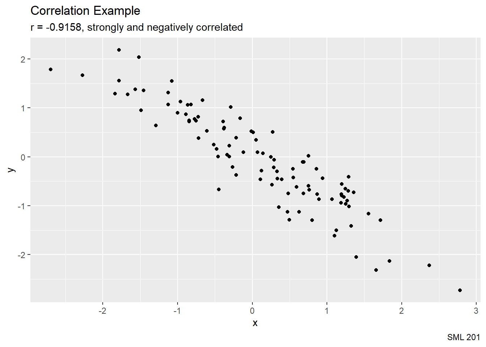
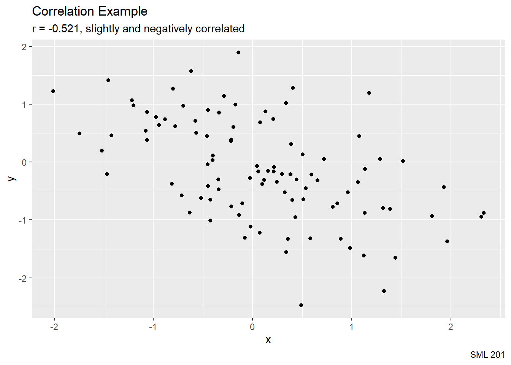
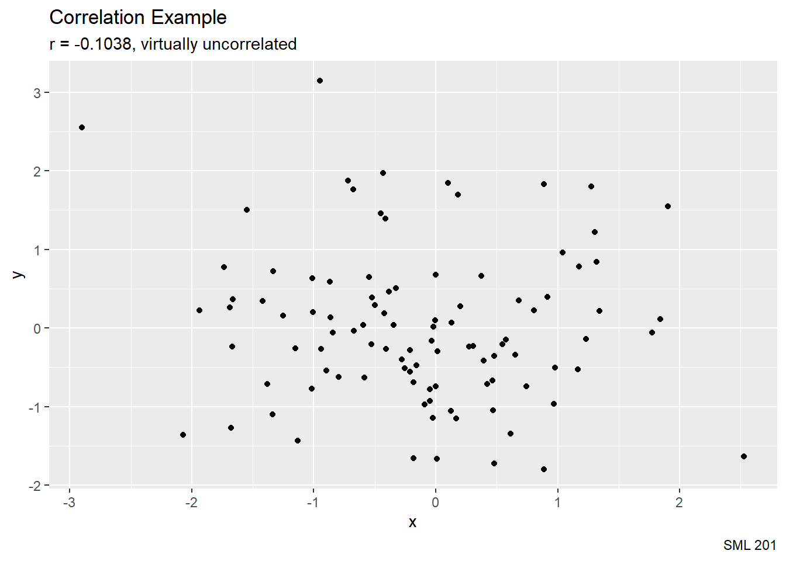
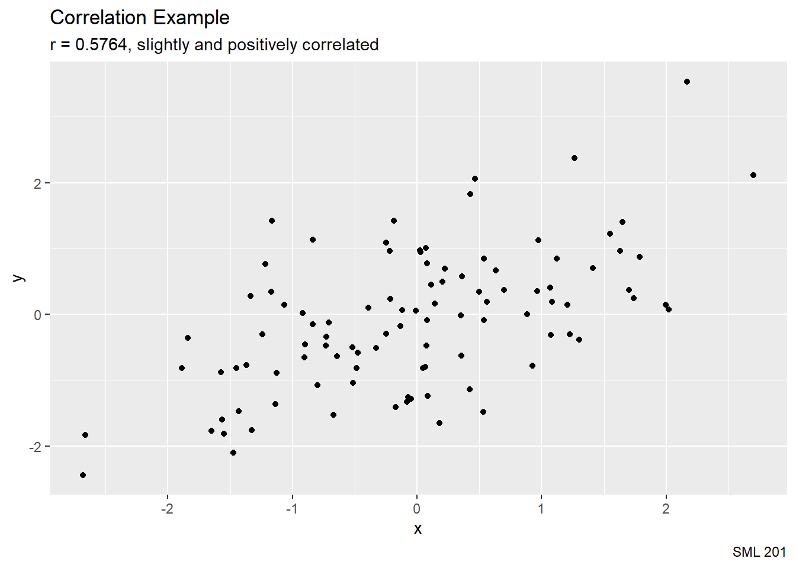
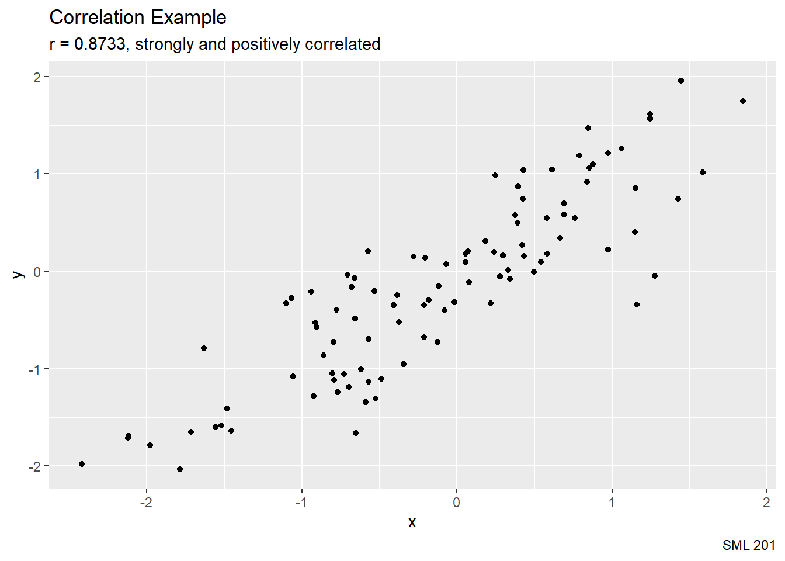
WarningDCP 1
Correlation (Calculations)
What is piping?
WarningStep-by-Step
Early in learning computer programming, we could create a new data frame after each calculation, but
- prone to typos and other errors
- more needs on computer memory
coffee_df2 <- select(coffee_df, flavor, aftertaste)
coffee_df3 <- mutate(coffee_df2, scale_x = scale(flavor))
coffee_df4 <- mutate(coffee_df3, scale_y = scale(aftertaste))
covariance_ops <- mutate(coffee_df4, products = scale_x * scale_y)covariance_ops <- coffee_df |>
select(flavor, aftertaste) |>
mutate(scale_x = scale(flavor)) |>
mutate(scale_y = scale(aftertaste)) |>
mutate(products = scale_x * scale_y)
WarningPiping for Efficiency
Piping in R allows us to code processes naturally
- as a chain of thought
- removes temporary data frames afterward
Long Way
NoteLong Way Digressions
These “Long Way” digressions are here to show more R functions, reveal internal calculations, and/or preview future ideas.
Scatterplots

p1 <- coffee_df |>
filter(total_cup_points > 0) |> #avoids outliers
ggplot() +
geom_point(aes(x = flavor, y = aftertaste),
color = "brown") +
labs(title = "Aftertaste vs Flavor",
subtitle = "Coffee Ratings Data",
caption = "Source: Tidy Tuesday") +
theme_minimal()
p2 <- coffee_df |>
filter(total_cup_points > 0) |> #avoids outliers
mutate(scale_x = scale(flavor)) |>
mutate(scale_y = scale(aftertaste)) |>
ggplot() +
geom_point(aes(x = scale_x, y = scale_y),
color = "brown") +
labs(title = "Aftertaste vs Flavor",
subtitle = "Standardized Data",
caption = "Source: Tidy Tuesday") +
theme_minimal()
p1 + p2 #patchworkcovariance_ops <- coffee_df |>
select(flavor, aftertaste) |>
mutate(scale_x = scale(flavor)) |>
mutate(scale_y = scale(aftertaste)) |>
mutate(products = scale_x * scale_y)gt
| Correlation Internal Calculations | ||||
| Rescaled Data and Products (first 10 rows shown) | ||||
| flavor | aftertaste | scale_x | scale_y | products |
|---|---|---|---|---|
| 8.83 | 8.67 | 3.29 | 3.14 | 10.31 |
| 8.67 | 8.50 | 2.89 | 2.72 | 7.84 |
| 8.50 | 8.42 | 2.46 | 2.52 | 6.19 |
| 8.58 | 8.42 | 2.66 | 2.52 | 6.70 |
| 8.50 | 8.25 | 2.46 | 2.10 | 5.16 |
| 8.42 | 8.42 | 2.26 | 2.52 | 5.69 |
| 8.50 | 8.33 | 2.46 | 2.30 | 5.65 |
| 8.33 | 8.50 | 2.03 | 2.72 | 5.52 |
| 8.67 | 8.58 | 2.89 | 2.91 | 8.41 |
| 8.58 | 8.50 | 2.66 | 2.72 | 7.23 |
| Source: Tidy Tuesday | ||||
covariance_ops |>
slice(1:10) |> #for visual brevity
gt() |>
cols_align(align = "center") |>
fmt_number(columns = everything(), decimals = 2) |>
tab_footnote(footnote = "Source: Tidy Tuesday") |>
tab_header(
title = "Correlation Internal Calculations",
subtitle = "Rescaled Data and Products (first 10 rows shown)"
) |>
tab_style(
style = cell_text(weight = "bold"),
locations = cells_column_labels()
) |>
tab_style(
style = list(cell_fill(color = "lightblue1")),
locations = cells_body(columns = "scale_x")
) |>
tab_style(
style = list(cell_fill(color = "indianred1")),
locations = cells_body(columns = "scale_y")
) |>
tab_style(
style = list(cell_fill(color = "mediumorchid1")),
locations = cells_body(columns = "products")
)Finish
\[r = \frac{1}{n-1}\sum_{i=1}^{n}\left(\frac{x_{i}-\bar{x}}{s_{x}}\right)\left(\frac{y_{i}-\bar{y}}{s_{y}}\right)\]
# sample size
# (carefully calculated in case of missing values)
n <- sum(!is.na(coffee_df$flavor))
corr_val <- sum(covariance_ops$products) / (n - 1)
print(round(corr_val, 4))[1] 0.8957- The data for
flavorandaftertasteare strongly and positively correlated
Short Way
NoteShort Way Tools
You may use code in the “Short Way” in precepts and projects (unless otherwise instructed)
- Compute the correlation between
flavorandaftertaste
cor(coffee_df$flavor, coffee_df$aftertaste)[1] 0.8956718- Compute the correlation between
uniformityandclean_cup
NoteMissing Values
Derek recommends using use = "pairwise.complete.obs" to avoid missing values in the cor() calculation(s).
- See: Precept 4
cor(coffee_df$uniformity, coffee_df$clean_cup,
use = "pairwise.complete.obs")[1] 0.5262187- Compute the correlation between
aromaandsweetness
coffee_df |>
summarize(r = cor(aroma, sweetness,
use = "pairwise.complete.obs"))# A tibble: 1 × 1
r
<dbl>
1 0.253Data Ethics: Causation?
WarningDCP 2
WarningCorrelation is Not Causation
- High values of \(r\) can appear by coincidence
- Even if there was some causation, how would we show the direction?
- Popular website of examples: Spurious Correlations by Tyler Vigen
Paradoxes
Simpson’s Paradox
Notedemonstration code
x1 = rnorm(100, mean = -6, sd = 1)
y1 = correlatedValues(x1, r = 0.75) + 6
x2 = rnorm(100, mean = -3, sd = 1)
y2 = correlatedValues(x2, r = 0.75) + 3
x3 = rnorm(100, mean = 0, sd = 1)
y3 = correlatedValues(x3, r = 0.75)
x4 = rnorm(100, mean = 3, sd = 1)
y4 = correlatedValues(x4, r = 0.75) - 3
x5 = rnorm(100, mean = 6, sd = 1)
y5 = correlatedValues(x5, r = 0.75) - 6
df1 <- data.frame(x1, y1, "group 1")
df2 <- data.frame(x2, y2, "group 2")
df3 <- data.frame(x3, y3, "group 3")
df4 <- data.frame(x4, y4, "group 4")
df5 <- data.frame(x5, y5, "group 5")
names(df1) <- c("xdata", "ydata", "group")
names(df2) <- c("xdata", "ydata", "group")
names(df3) <- c("xdata", "ydata", "group")
names(df4) <- c("xdata", "ydata", "group")
names(df5) <- c("xdata", "ydata", "group")
demo_df <- rbind(df1, df2, df3, df4, df5)Now we will visualize the data in demo_df
demo_df |>
ggplot(aes(x = xdata, y = ydata)) +
geom_point() +
labs(title = "all together")
# compute correlation
demo_df |>
summarize(cor = cor(xdata, ydata)) cor
1 -0.5661314Now let us treat the groups separately.
demo_df |>
ggplot(aes(x = xdata, y = ydata, color = group)) +
geom_point() +
labs(title = "separate groups")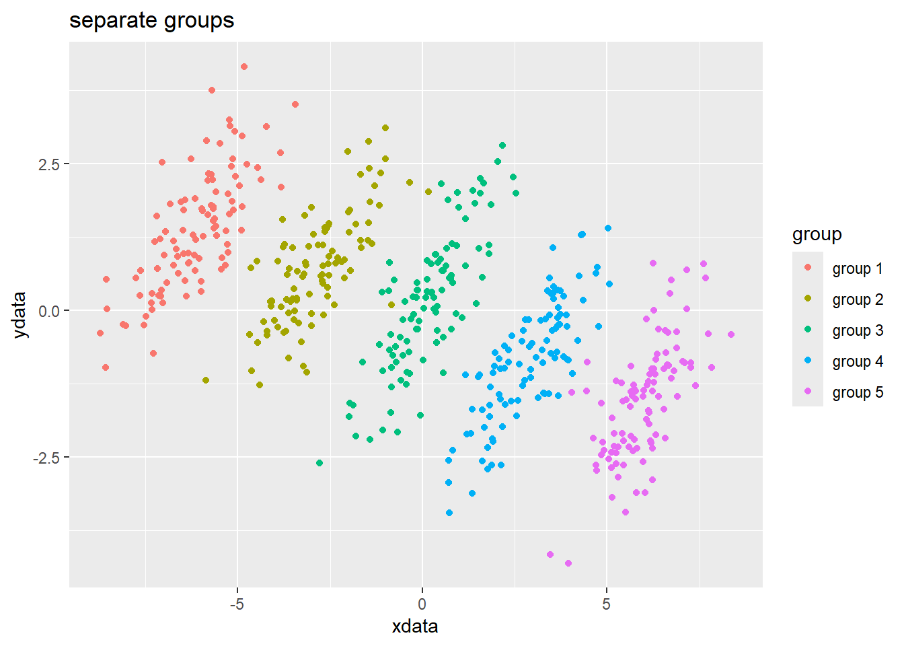
# compute correlation
demo_df |>
group_by(group) |>
summarize(cor = cor(xdata, ydata))# A tibble: 5 × 2
group cor
<chr> <dbl>
1 group 1 0.745
2 group 2 0.721
3 group 3 0.815
4 group 4 0.805
5 group 5 0.668Berkson’s Paradox
College Admission Stats
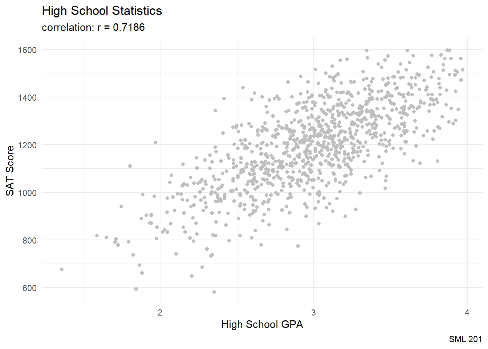

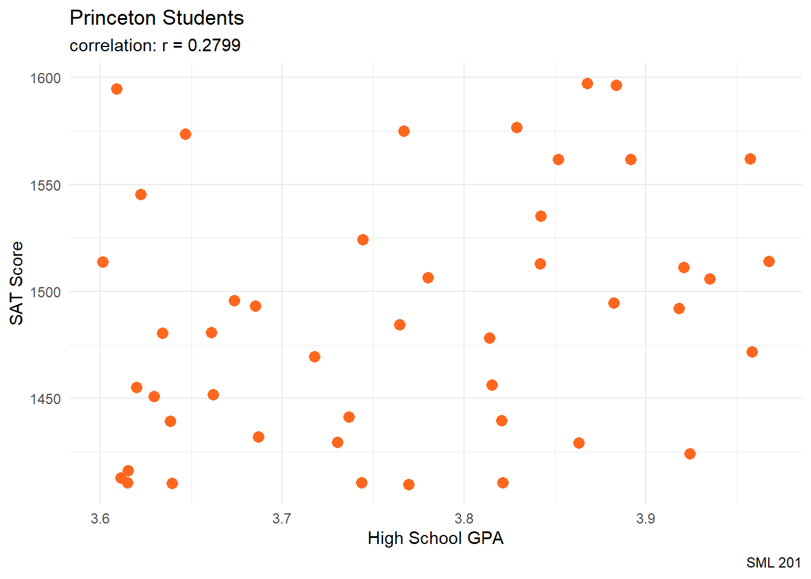
x1 = rnorm(1000, mean = 0, sd = 1)
y1 = correlatedValues(x1, r = 0.75)
gpa_hs <- 0.5*x1 + 3
sat_hs <- 200*y1 + 1200
data_hs <- data.frame(gpa_hs, sat_hs) |>
filter(gpa_hs <= 4.0) |>
filter(sat_hs <= 1600)
data_ivy <- data_hs |>
filter(gpa_hs > 3.6) |>
filter(sat_hs > 1400)
corr_val_before <- cor(data_hs$gpa_hs, data_hs$sat_hs)
corr_val_after <- cor(data_ivy$gpa_hs, data_ivy$sat_hs)
p1 <- data_hs |>
ggplot() +
geom_point(aes(x = gpa_hs, y = sat_hs),
color = "gray75") +
labs(title = "High School Statistics",
subtitle = paste0("correlation: r = ", round(corr_val_before, 4)),
caption = "SML 201",
x = "High School GPA",
y = "SAT Score") +
theme_minimal()
p2 <- data_hs |>
ggplot() +
geom_point(aes(x = gpa_hs, y = sat_hs),
color = "gray75") +
geom_point(aes(x = gpa_hs, y = sat_hs),
color = "#FF671F",
data = data_ivy,
size = 3) +
geom_vline(xintercept = 3.6, color = "black",
linewidth = 2, linetype = 2) +
geom_hline(yintercept = 1400, color = "black",
linewidth = 2, linetype = 2) +
labs(title = "Selection Bias",
subtitle = "(subsetting)",
caption = "SML 201",
x = "High School GPA",
y = "SAT Score") +
theme_minimal()
p3 <- data_ivy |>
ggplot() +
geom_point(aes(x = gpa_hs, y = sat_hs),
color = "#FF671F",
size = 3) +
labs(title = "Princeton Students",
subtitle = paste0("correlation: r = ", round(corr_val_after, 4)),
caption = "SML 201",
x = "High School GPA",
y = "SAT Score") +
theme_minimal()Rizz
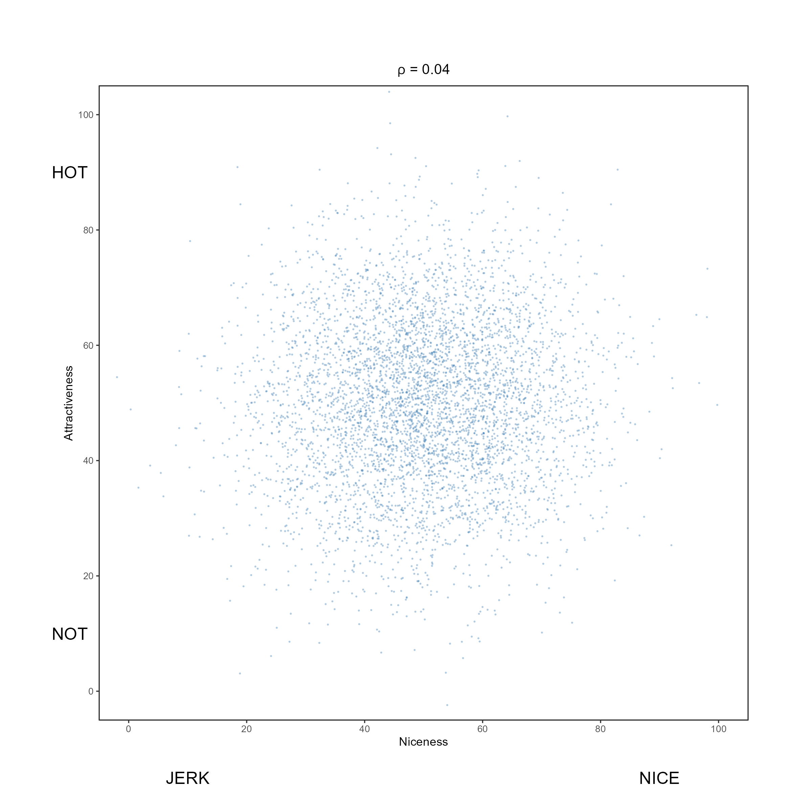
- image source: Cristóbal Alcázar
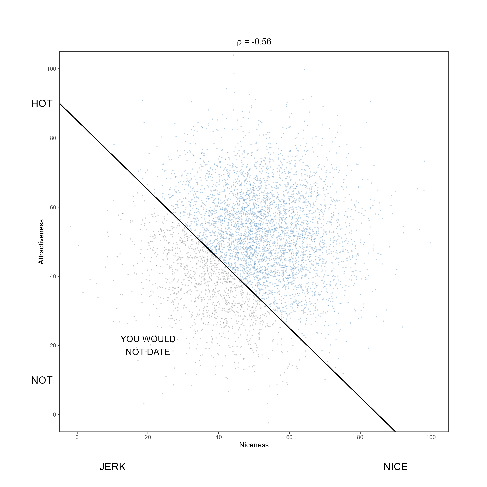
- image source: Cristóbal Alcázar

WarningThis is why everyone you date is a jerk!
- image source: Cristóbal Alcázar
- as mentioned in a book by Carl T Bergstrom and Jevin D West
Correlation Matrices
coffee_df |>
select_if(is.numeric) |>
cor(use = "pairwise.complete.obs") |>
corrplot.mixed(order = "FPC", upper = "ellipse")
judging_categories <- c("aroma", "flavor", "aftertaste", "acidity", "body", "balance", "uniformity", "clean_cup", "sweetness")
coffee_df |>
select(any_of(c(judging_categories, "total_cup_points"))) |>
cor() |>
corrplot.mixed(order = "FPC", upper = "ellipse")
Research Considerations
TipCorrelation is not inherently bad!
If correlation is not causation, then … ?
Humanities and life sciences tend to seek high correlation values
- hint at possible causation
Physical sciences and engineering tend to seek low correlation
- dimensionality reduction
Causation? Seek out econometrics or graduate studies
Quantiles
Recall that we can use summary on a numerical variable.
summary(coffee_df$total_cup_points) Min. 1st Qu. Median Mean 3rd Qu. Max.
0.00 81.08 82.50 82.09 83.67 90.58 The dplyr way to compute quantiles includes
coffee_df |>
summarize(min = min(total_cup_points, na.rm = TRUE),
q25 = quantile(total_cup_points, 0.25, na.rm = TRUE),
q50 = quantile(total_cup_points, 0.50, na.rm = TRUE),
q75 = quantile(total_cup_points, 0.75, na.rm = TRUE),
max = max(total_cup_points, na.rm = TRUE))# A tibble: 1 × 5
min q25 q50 q75 max
<dbl> <dbl> <dbl> <dbl> <dbl>
1 0 81.1 82.5 83.7 90.6We can verify that about 50% of the data are below the median value
mean(coffee_df$total_cup_points <
median(coffee_df$total_cup_points))[1] 0.4899178We can verify that about 75% of the data are indeed below that value for the 0.75 quantile (i.e. 75th percentile.)
mean(coffee_df$total_cup_points < 83.67)[1] 0.7490665The interquartile range is the 75th percentile minus the 25th percentile.
summary(coffee_df$total_cup_points) Min. 1st Qu. Median Mean 3rd Qu. Max.
0.00 81.08 82.50 82.09 83.67 90.58 IQR(coffee_df$total_cup_points, na.rm = TRUE)[1] 2.59Categorical Group
The dplyr code is easily adaptable to grouped data.
coffee_df |>
group_by(species) |>
summarize(min = min(total_cup_points, na.rm = TRUE),
q25 = quantile(total_cup_points, 0.25, na.rm = TRUE),
q50 = quantile(total_cup_points, 0.50, na.rm = TRUE),
q75 = quantile(total_cup_points, 0.75, na.rm = TRUE),
max = max(total_cup_points, na.rm = TRUE))# A tibble: 2 × 6
species min q25 q50 q75 max
<chr> <dbl> <dbl> <dbl> <dbl> <dbl>
1 Arabica 0 81.2 82.5 83.7 90.6
2 Robusta 73.8 80.2 81.5 82.5 83.8Histograms

arabica <- coffee_df |>
filter(total_cup_points > 0) |>
filter(species == "Arabica")
robusta <- coffee_df |>
filter(total_cup_points > 0) |>
filter(species == "Robusta")
q25 <- quantile(arabica$total_cup_points, 0.25, na.rm = TRUE)
q50 <- quantile(arabica$total_cup_points, 0.50, na.rm = TRUE)
q75 <- quantile(arabica$total_cup_points, 0.75, na.rm = TRUE)
IQR <- q75 - q25
bottom <- q25 - 1.5*IQR
top <- q75 + 1.5*IQR
# points of interest
POI <- c(bottom, q25, q50, q75, top)
p1 <- arabica |>
ggplot() +
geom_histogram(aes(x = total_cup_points),
bins = 25,
color = "black",
fill = "gray80") +
geom_vline(xintercept = POI, color = "red",
linewidth = 2) +
labs(title = "Arabica Coffee",
subtitle = "Distribution of Total Cup Points",
caption = "Source: Tidy Tuesday") +
theme_minimal() +
xlim(55, 95)
q25 <- quantile(robusta$total_cup_points, 0.25, na.rm = TRUE)
q50 <- quantile(robusta$total_cup_points, 0.50, na.rm = TRUE)
q75 <- quantile(robusta$total_cup_points, 0.75, na.rm = TRUE)
IQR <- q75 - q25
bottom <- q25 - 1.5*IQR
top <- q75 + 1.5*IQR
# points of interest
POI <- c(bottom, q25, q50, q75, top)
p2 <- robusta |>
ggplot() +
geom_histogram(aes(x = total_cup_points),
bins = 25,
color = "black",
fill = "gray80") +
geom_vline(xintercept = POI, color = "blue",
linewidth = 2) +
labs(title = "Robusta Coffee",
subtitle = "Distribution of Total Cup Points",
caption = "Source: Tidy Tuesday") +
theme_minimal() +
xlim(55, 95)
#| echo: false
#| eval: true
p1 / p2 #patchworkBoxplots
NoteBoxplots
A boxplot is useful to graph a numerical variable (on the vertical axis) across a categorical variable (on the horizontal axis).
coffee_df |>
filter(total_cup_points > 0) |> #avoid one outlier
ggplot() +
geom_boxplot(aes(x = species, y = total_cup_points, color = species)) +
labs(title = "Coffee Ratings",
subtitle = "Are these quantities different?",
caption = "Source: Coffee Quality Database",
x = "species", y = "total points") +
scale_color_manual(values = c("red","blue")) +
theme_minimal() +
theme(legend.position = "none")
More than Two Groups
coffee_df |>
filter(!is.na(processing_method)) |>
group_by(processing_method) |>
summarize(min = min(total_cup_points, na.rm = TRUE),
q25 = quantile(total_cup_points, 0.25, na.rm = TRUE),
q50 = quantile(total_cup_points, 0.50, na.rm = TRUE),
q75 = quantile(total_cup_points, 0.75, na.rm = TRUE),
max = max(total_cup_points, na.rm = TRUE))# A tibble: 5 × 6
processing_method min q25 q50 q75 max
<chr> <dbl> <dbl> <dbl> <dbl> <dbl>
1 Natural / Dry 67.9 81.2 82.8 83.8 89
2 Other 63.1 80.8 81.8 83.0 84.7
3 Pulped natural / honey 80.1 82.0 82.7 83.2 86.6
4 Semi-washed / Semi-pulped 78.8 81.5 82.5 83.6 86.1
5 Washed / Wet 59.8 81 82.4 83.5 90.6coffee_df |>
filter(!is.na(processing_method)) |>
group_by(processing_method) |>
mutate(min_val = min(total_cup_points, na.rm = TRUE),
q25 = quantile(total_cup_points, 0.25, na.rm = TRUE),
q50 = quantile(total_cup_points, 0.50, na.rm = TRUE),
q75 = quantile(total_cup_points, 0.75, na.rm = TRUE),
max_val = max(total_cup_points, na.rm = TRUE)) |>
ungroup() |>
select(processing_method, min_val, q25, q50, q75, max_val) |>
distinct()# A tibble: 5 × 6
processing_method min_val q25 q50 q75 max_val
<chr> <dbl> <dbl> <dbl> <dbl> <dbl>
1 Washed / Wet 59.8 81 82.4 83.5 90.6
2 Natural / Dry 67.9 81.2 82.8 83.8 89
3 Pulped natural / honey 80.1 82.0 82.7 83.2 86.6
4 Semi-washed / Semi-pulped 78.8 81.5 82.5 83.6 86.1
5 Other 63.1 80.8 81.8 83.0 84.7coffee_df |>
filter(!is.na(processing_method)) |>
ggplot() +
geom_boxplot(aes(x = processing_method, y = total_cup_points,
color = processing_method)) +
labs(title = "Coffee Ratings",
subtitle = "Are these quantities different?",
caption = "Source: Coffee Quality Database",
x = "", y = "total points") +
theme_minimal() +
theme(axis.text.x = element_text(angle = 45),
legend.position = "none")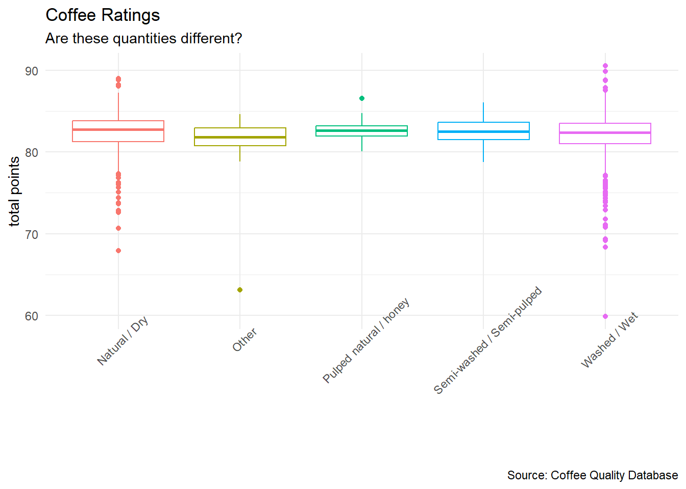
WarningDCP 3
Case Study: Implicit Bias
A couple of weeks ago, we rated a group of visuals (graphs).
A/B Testing
- L01 saw one set of graphs
- L02 saw a slightly different set of graphs


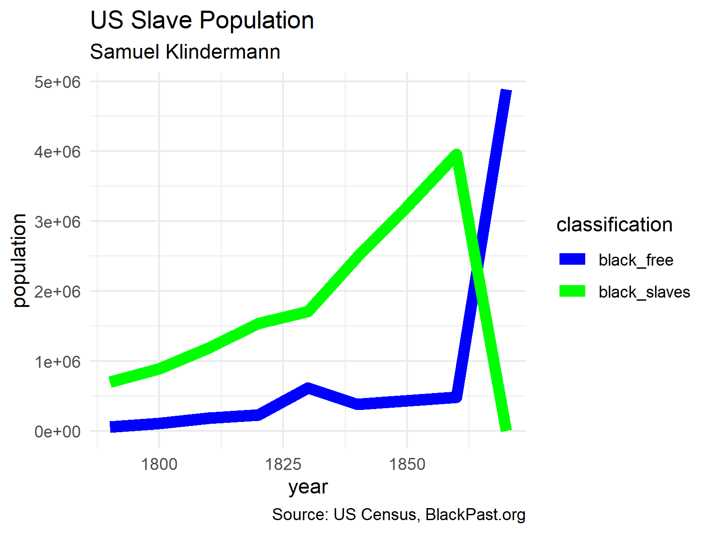
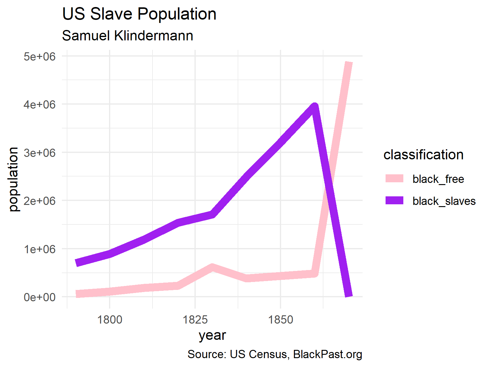
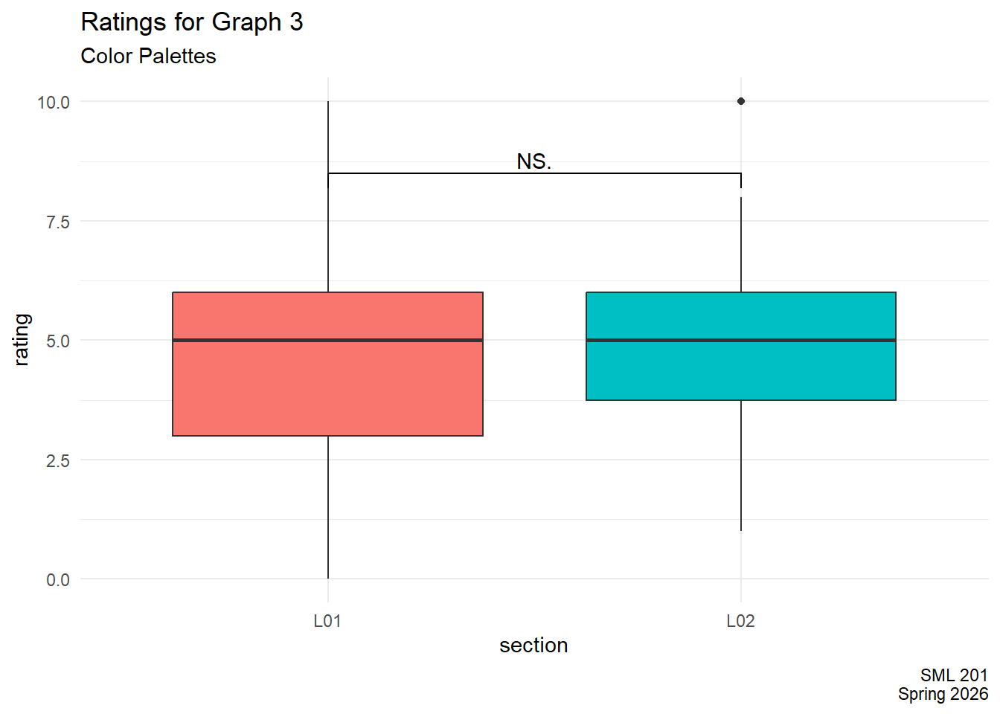
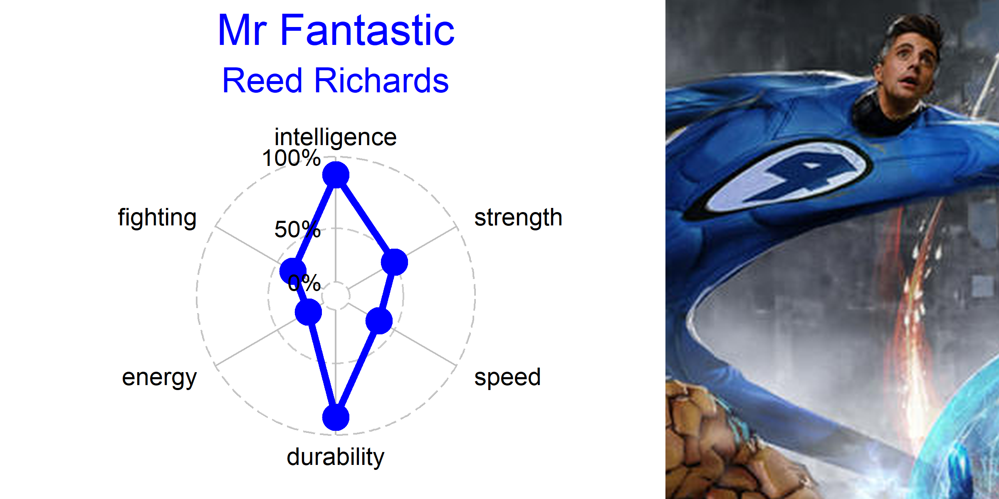


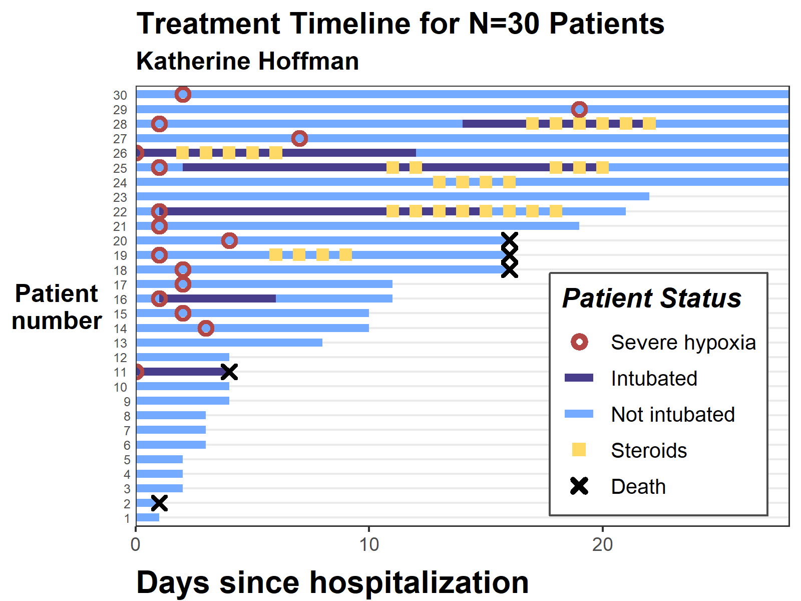

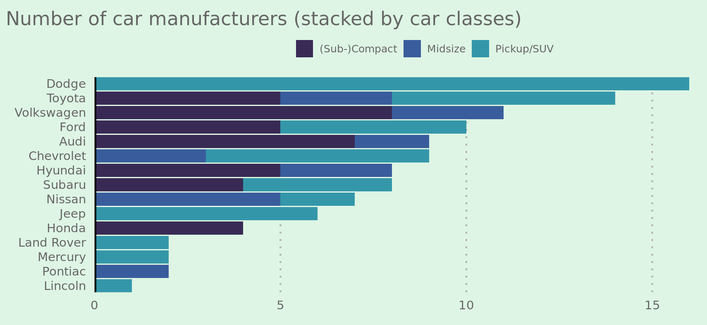


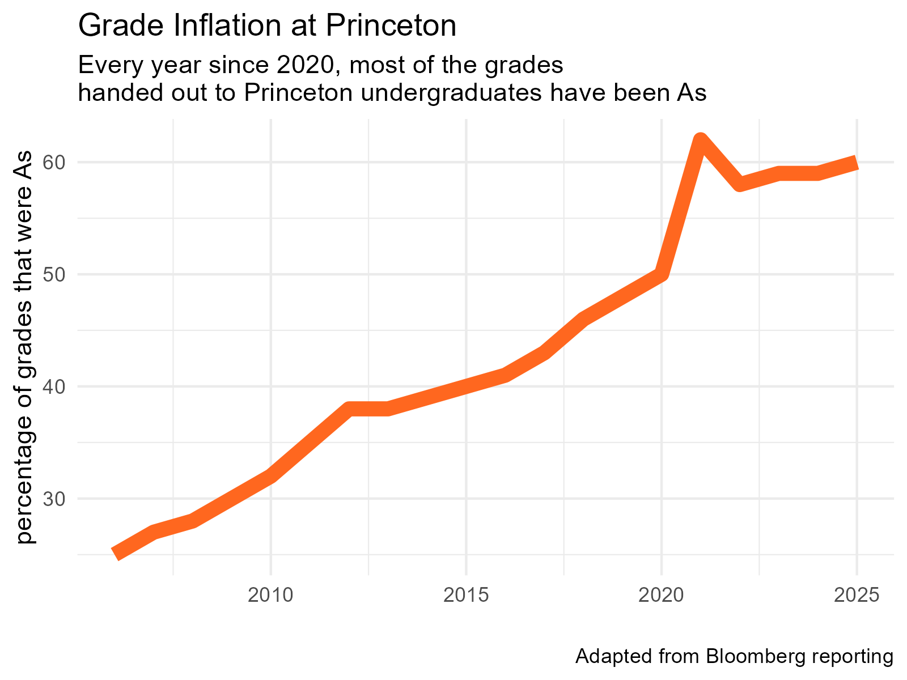

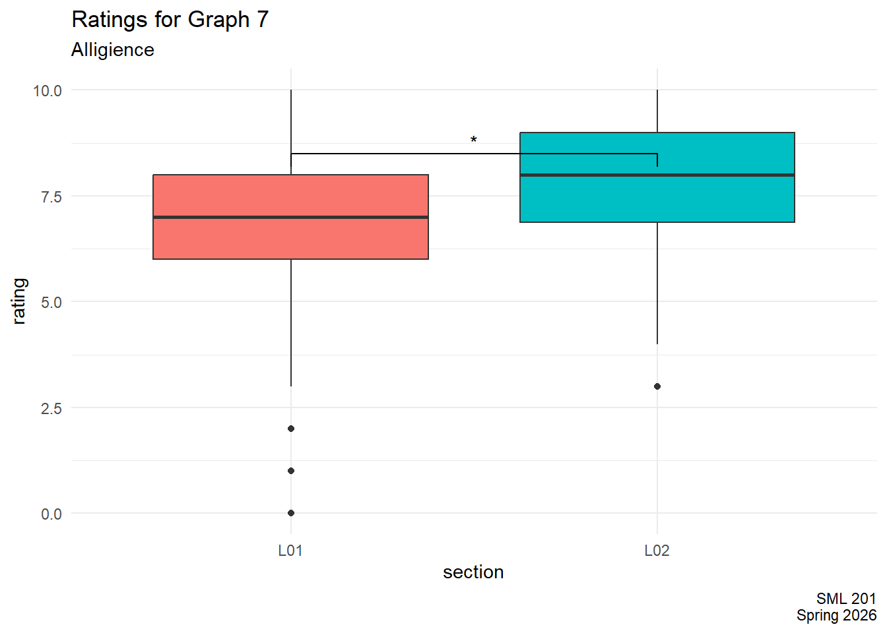
Quo Vadimus?
Assignments (due Friday):
- Precept 3
- Introducting Gradescope
Project 1:
- due: Feb 24
Exam 1: March 5
- McDonnell A02
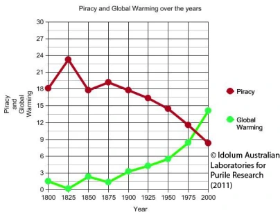
- image source: Dr Sandy Dersham
Footnotes
Note(optional) Additional Resources
vignette about
corrplotby Taiyun Wei and Viliam SimkoSimpsons Paradox song by The Raf (to the tune of “Blinding Lights” by the Weeknd)
books about causation
- The Effect by Nick Huntington-Klein
- Causal Mixtape by Scott Cunningham
NoteSession Info
sessionInfo()R version 4.5.2 (2025-10-31 ucrt)
Platform: x86_64-w64-mingw32/x64
Running under: Windows 10 x64 (build 19045)
Matrix products: default
LAPACK version 3.12.1
locale:
[1] LC_COLLATE=English_United States.utf8
[2] LC_CTYPE=English_United States.utf8
[3] LC_MONETARY=English_United States.utf8
[4] LC_NUMERIC=C
[5] LC_TIME=English_United States.utf8
time zone: America/New_York
tzcode source: internal
attached base packages:
[1] stats graphics grDevices utils datasets methods base
other attached packages:
[1] lubridate_1.9.4 forcats_1.0.0 stringr_1.5.1 dplyr_1.1.4
[5] purrr_1.1.0 readr_2.1.5 tidyr_1.3.1 tibble_3.3.0
[9] ggplot2_4.0.0 tidyverse_2.0.0 patchwork_1.3.1 gt_1.0.0
[13] ggsignif_0.6.4 corrplot_0.95
loaded via a namespace (and not attached):
[1] sass_0.4.10 utf8_1.2.6 generics_0.1.4 xml2_1.3.8
[5] stringi_1.8.7 hms_1.1.3 digest_0.6.37 magrittr_2.0.3
[9] evaluate_1.0.4 grid_4.5.2 timechange_0.3.0 RColorBrewer_1.1-3
[13] fastmap_1.2.0 jsonlite_2.0.0 scales_1.4.0 cli_3.6.5
[17] rlang_1.1.6 crayon_1.5.3 bit64_4.6.0-1 withr_3.0.2
[21] yaml_2.3.10 tools_4.5.2 parallel_4.5.2 tzdb_0.5.0
[25] vctrs_0.6.5 R6_2.6.1 lifecycle_1.0.4 htmlwidgets_1.6.4
[29] bit_4.6.0 vroom_1.6.5 pkgconfig_2.0.3 pillar_1.11.0
[33] gtable_0.3.6 glue_1.8.0 xfun_0.52 tidyselect_1.2.1
[37] rstudioapi_0.17.1 knitr_1.50 farver_2.1.2 htmltools_0.5.8.1
[41] labeling_0.4.3 rmarkdown_2.29 compiler_4.5.2 S7_0.2.0